Exchange
three long exhale–inhale cycles
Stand with feet together and arms relaxed at the sides. Exhale slowly through the mouth as if emptying stale air; then inhale slowly through the nose as if filling with fresh air.
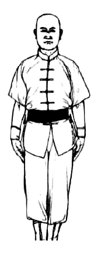
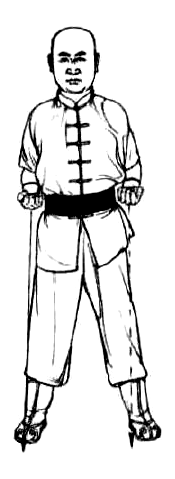
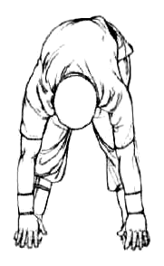
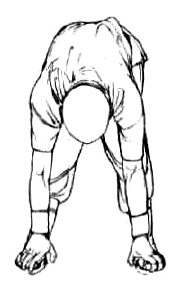
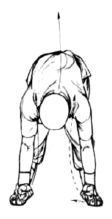
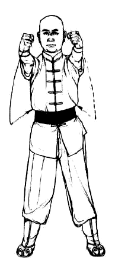
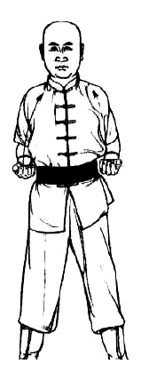
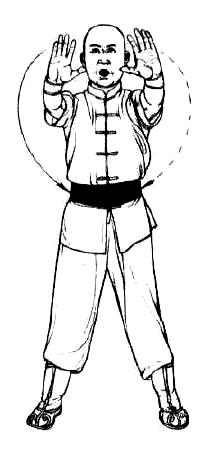
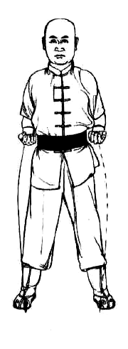
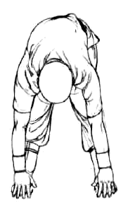
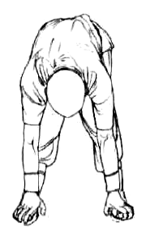
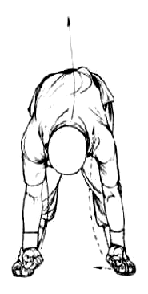
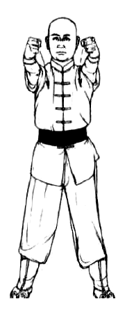
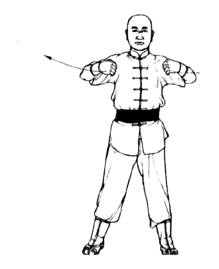
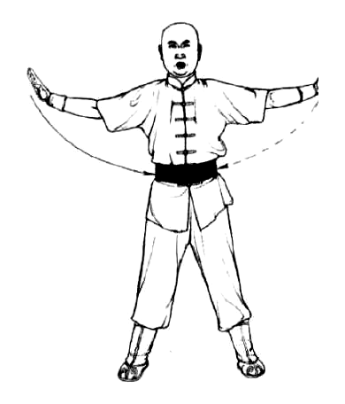
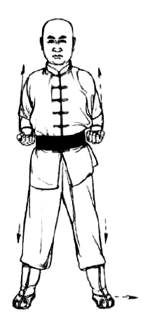
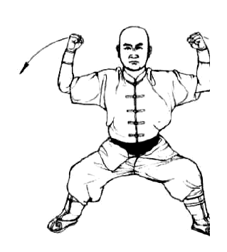
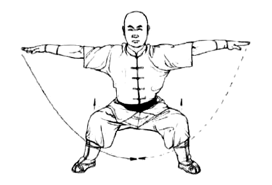
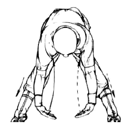
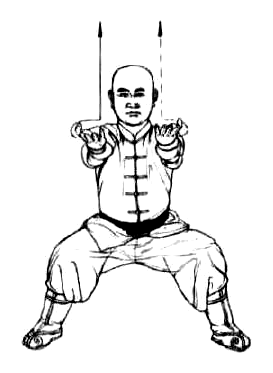
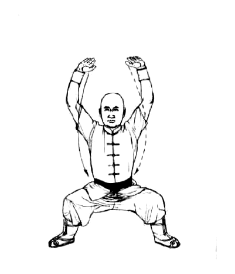
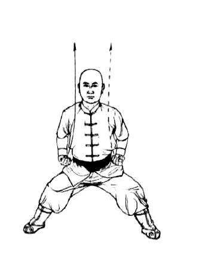
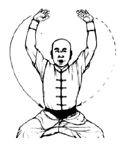
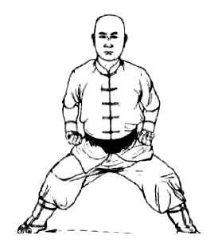
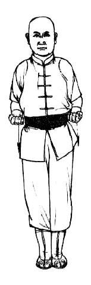
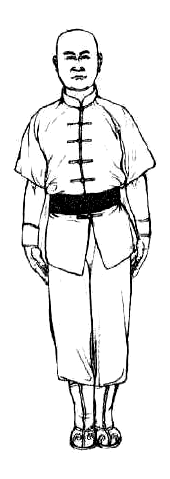